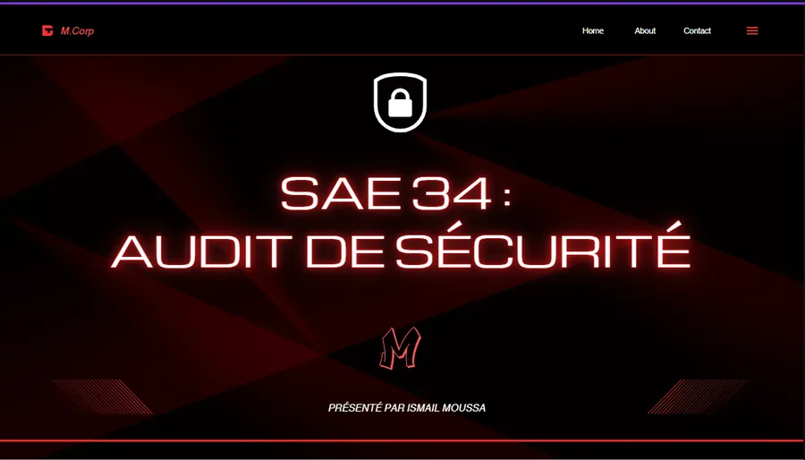
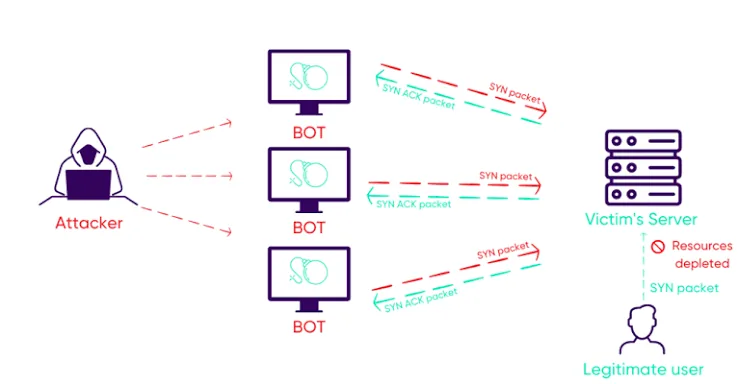
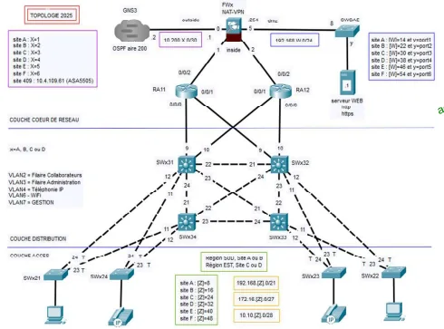
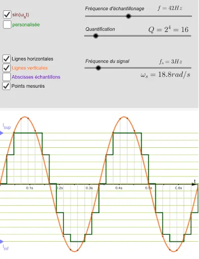
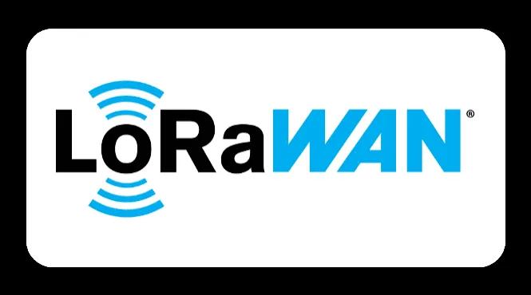
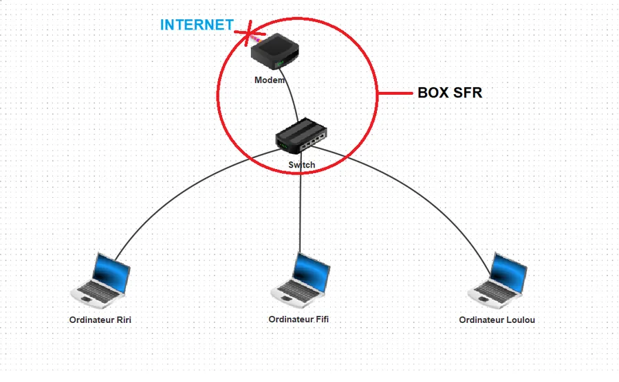

PORTFOLIO
Réalisations techniques
12 projets classés par domaine, avec objectif, contribution, compétences et preuves. L’objectif : montrer une progression claire en réseaux, cybersécurité, systèmes, développement et télécommunications.

Test d'Intrusion & Pivotage
2026Audit pédagogique avec pivot réseau, exploitation et élévation de privilèges.

Sécurisation LAN & 802.1X
2026TP complet sur les attaques couche 2 et la mise en place d’une défense 802.1X.
Plateforme SaaS de Scan
2026Projet en groupe de 6. Concepteur exclusif de la brique de scan de vulnérabilités avancé.
Applications Communicantes
25-26Application Android connectée à une API JSON pour consulter les failles détectées.

Réseau sécurisé multi-sites
25-26Architecture Cisco avec OSPF, HSRP/STP, VPN et haute disponibilité.

Simulation & Numérisation
2025Scripts Python pour analyser, numériser et débruiter des signaux.

Transmission IoT : LoRaWAN
2025Mesures radio et étude de faisabilité d’une liaison IoT LoRaWAN.
Projet Thales Alenia Space
24-25Configuration Raspberry Pi et communication réseau pour un système de traçabilité.
Sensibilisation Cybersécurité
24-25Analyse de cyberattaques et production d’un support pédagogique.

Analyse de Réseau & Énergie
2024Modélisation de topologie, analyse Wireshark et bilan CO2 d'une infrastructure (Réalisé en solo).
Lignes de Transmission
2024Caractérisation de lignes coaxiales et ondes stationnaires via MatLab (Réalisé en solo de A à Z).
Introduction à l'e-reputation
2024Analyse et création de ressources de sensibilisation sur les risques numériques.
SAVOIR-FAIRE
Compétences techniques
Compétences regroupées par domaines et reliées aux projets pour une lecture rapide : réseau, sécurité, systèmes, automatisation et communication technique.
Cybersécurité & Audit
Offensif (Pentest)
Défensif & Gouvernance
Réseaux & Télécoms
Infrastructures & Routage
IoT & Modélisation
Mises en pratique :
Développement & Scripting
Langages & Architectures
Mises en pratique :
Systèmes & DevOps
Administration & Conteneurs
Mises en pratique :
EXPÉRIENCE
Alternance en infrastructure réseau
En alternance à l’Institut Arnault Tzanck, j’interviens sur une infrastructure hospitalière réelle : câblage, brassage, Wi‑Fi, VPN, supervision et support. Priorité : disponibilité, rigueur et qualité de service.
Administrateur Réseau & Sécurité (Apprenti)
Déploiement et Maintenance
- Mise en service et dépannage de switchs Aruba/HP, routeurs Juniper, bornes Wi‑Fi et téléphones IP.
- Brassage propre des locaux techniques avec repérage, câblage et documentation.
Sécurisation du Réseau
- Migration d’équipements hors VLAN natif et sécurisation progressive du LAN.
- Accompagnement des utilisateurs sur les accès VPN GlobalProtect.
Supervision & Sauvegardes
- Création et suivi de sondes PRTG pour anticiper les incidents.
- Vérification des sauvegardes automatiques FTP/TFTP et résolution d’anomalies.
PROFIL
À propos
Quelques repères personnels qui expliquent ma façon de travailler : discipline, créativité, communication et racines familiales.
Sport et discipline personnelle
Le sport m’aide à garder une discipline régulière. La musculation, pratiquée avec constance, renforce ma confiance, ma rigueur et ma capacité à progresser étape par étape.
Création & Communication
La création de formats courts m’apprend à synthétiser une idée, structurer un message et capter l’attention. Une compétence utile pour vulgariser des sujets techniques.
Mes racines familiales
Mes racines familiales sont un pilier. Le soutien de mes proches, notamment de mes parents, nourrit ma détermination et mon envie de construire un avenir solide qui les rende fiers.
CONTACT
Contact
Pour échanger sur mon parcours, mes projets ou une opportunité, contactez-moi directement par e-mail, LinkedIn ou GitHub.
Échanger avec moi
Disponible pour échanger autour des réseaux, de la cybersécurité et des projets d’infrastructure.